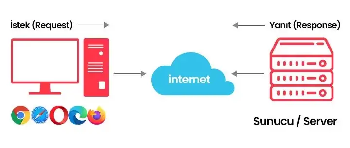

HTTP Nedir?
HTTP (Hyper Text Transfer Protocol) Köprü metin aktarım protokolü anlamına gelir. HTTP internetteki web sayfalarını görüntülemek için kullanılan protokoldür. Tarayıcının adres çubuğundaki bir URL’den önce gelir, çünkü HTTP, istemci ile web sunucusu arasındaki iletişim için kullanılan genel protokol standardıdır. Bu protokol, istemci tarafında web sunucusu verilerinin doğru görüntülenmesi için temel gereksinimdir. Bu protocol bir web sunucusu ile bir web tarayıcısı arasında veri göndermenin güvenli bir yoludur.
HTTPS Nedir?
HTTP ile metinler açık metin olarak aktarıldığı için bilgisayar korsanları, hacker gibi kişilere karşı savunmasızdır. Ancak telefon numaranız, adresiniz ve kredi kartı bilgileriniz gibi hassas verilerinizin bu şekilde gönderimi bir güvenlik zafiyeti oluşturuyordu. Bu yüzden uzmanlar HTTPS’yi geliştirdi.
HTTP + S (Secure/Güvenli) = HTTPS (Hyper Text Transform Protocol Secure) Güvenli Köprü Metin Aktarım Protokolü anlamına gelir. Yani bu bir güvenlik önlemine sahip HTTP’dir. Ve Güvenli HTTP, HTTP’den alınan verileri şifreler. Bilgisayarlar ve sunucular arasında internet üzerinden transfer olan tüm verilerin okunmasını imkansız hale getirerek güvenli olmasını sağlar. Ve bunu da, aktarılan verileri karıştırmak için şifreleme algoritmaları kullanarak yapar.
HTTP Metotları
HTTP sunucuya yapılacak olan isteğin tipini belirlemek için sekiz farklı method kullanır (HTTP Methods). Bu metotlara aynı zamanda HTTP Fiilleri de denir (HTTP Verbs).
Genel Metotlar aşağıdaki gibidir.
Get :Sunucuda halihazırda bulunan bir kaynağa erişim için kullanılır.
Post :Sunucu üzerinde yeni bir kaynak oluşturmak için kullanılır. Post istekleri genellikle yeni oluşturulacak kaynağa ait bilgiyi de taşırlar.
Put :Sunucudaki bir kaynağı güncellemek için kullanılır. Bu istekler de genellikle üzerilerinde değiştirilmek istenen bilgiyi taşırlar.
Patch :Bu metot da sunucudaki bir kaynağı değiştirmek için kullanılır. Put ile arasındaki fark ise Put sunucudaki kaynağı yeni bir kaynak ile değiştirmek için kullanılır iken, Patch bu kaynağında bir kısmını değiştirmeye yarar.
Delete :Sunucudaki bir kaynağı silmeye yarar.
Daha az kullanılan metotlar ise aşağıdaki gibidir:
Connect :Sunucu ile bir bağlantı oluşturma isteği gönderir. Sunucu bağlantılarını minimum yük ile test etme olanağı sağlar.
Head :Sunucuya aynı Get metodu gibi ancak sadece başlığı olan (Request Header), gövdesi olmayan(Request Body) bir istek gönderir. Genellikle sunucuda bir kaynak mevcut mu veya kaynağın en son güncellenme bilgisi için kullanılır.
Options :Sunucunun desteklediği metotları kontrol etmek için kullanılır.
Trace :Bu metod ile bir sunucuya istek gönderdiğinizde, aradaki tüm vekil sunucular (Proxy, Gateway) isteğin başlığına kendi IP veya DNS biglilerini eklerler. Genellikle hata ayıklama/bakım işleri için kullanılır.
HTTP Durum Kodları
İstemci bir sunucu içeriğine HTTP kullanarak ulaşmaya çalıştığında sunucu yanıtın durumunu belirten bir sayısal kod gönderir. Bazı durumlarda HTTP durum kodu (HTTP Status Code) istemcinin tarayıcısında da gösterilebilir Örn; 200, 301, 302, 404 ve 500 kodları en yaygın olanlardır. Durum kodlarında 1’den 5’e kadar gruplandırılmıştır.
-1xx Bilgi
-2xx Başarı
-3xx Yönlendirme
-4xx Tarayıcı Hatası
-5xx Sunucu Hatası